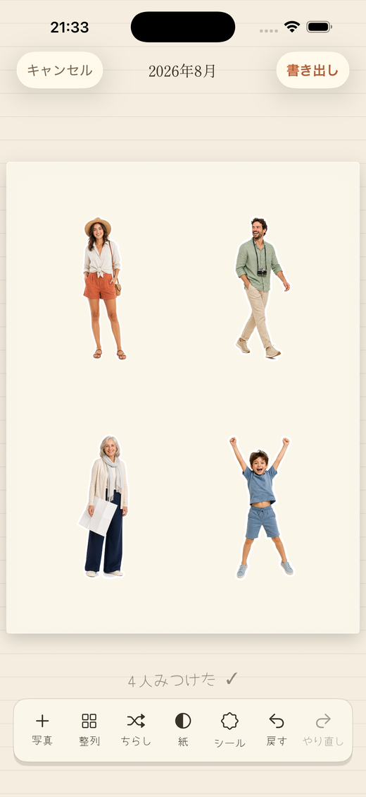
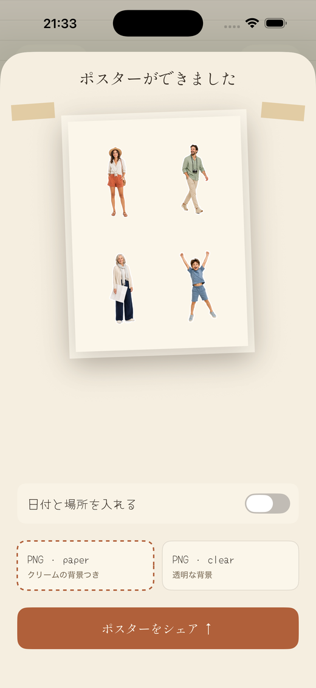
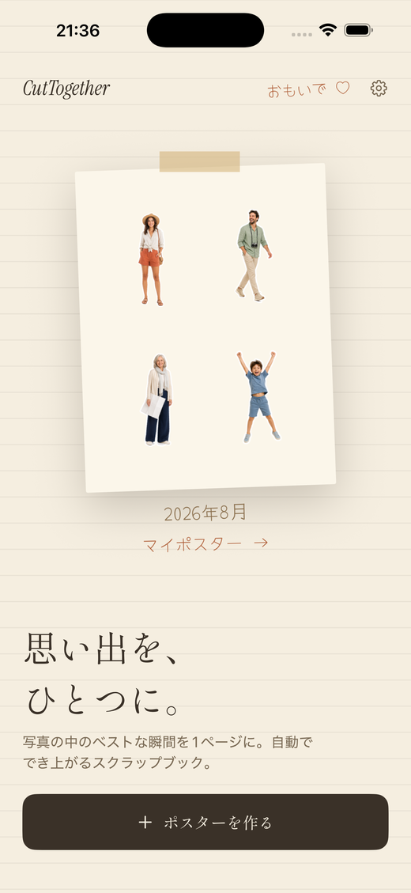

オンデバイスのスクラップブック
写真は400枚。
残るのは人。
選んだ写真から全員を見つけてステッカーのように切り抜き、1枚のスクラップブックポスターに並べます。切り抜きは自動、旅の記憶はそのまま。
近日公開App StoreiPHONE ＆ iPAD · アカウント不要 · 写真は端末の外に出ません
自動切り抜き
ダイカット風の枠
マスキングテープ
PNG 書き出し
2026年8月
使い方
カメラロールから1ページまで、3ステップ。
選ぶ
写真は最大20枚
写真ピッカーからそのまま。アルバムを作る必要も、タグ付けも要りません。
切り抜く
全員が切り抜かれます
Apple の Vision フレームワークが端末内で人物を見つけ、背景から持ち上げます。1枚に複数人いてもそれぞれ。
並べる
ポスターは自動で仕上がる
ステッカーが1枚ずつ紙に降りてきます。動かす・拡大する・回す・散らすで整えて、PNG で書き出し。
画面
写真編集アプリではなく、スクラップブックの1ページ。



プライバシー
写真はこの端末から出ません。
サーバーはありません。ログインも、サードパーティ SDK もありません。写真の解析・背景除去・描画はすべて iPhone の中で行われ、アプリが見られるのはシステムのピッカーで渡した写真だけです。
ディテール
小さなアプリ。明確な選択。
写真は端末から出ません
人物検出も背景除去も端末内で完結。アップロードもアカウントも解析ツールもありません。
ダイカット風のふち
ホワイト・クリーム・インク・テラコッタから枠を選択。なしにもできます。
4種類の紙
ホワイト・クリーム・インク・クラフト、そしてどこにでも貼れる透明背景の書き出し。
日付は写真から
手書き風キャプションの日付を、写真の撮影情報から自動で読み取ります。
ポスターライブラリ
シェアしたポスターは保存され、再シェアも削除も自由です。
4言語対応
English、한국어、日本語、繁體中文 — 言語ごとに見出しと手書きの書体まで。
フォルダではなく、人を残す。
iPhone と iPad に近日公開。
近日公開App Store